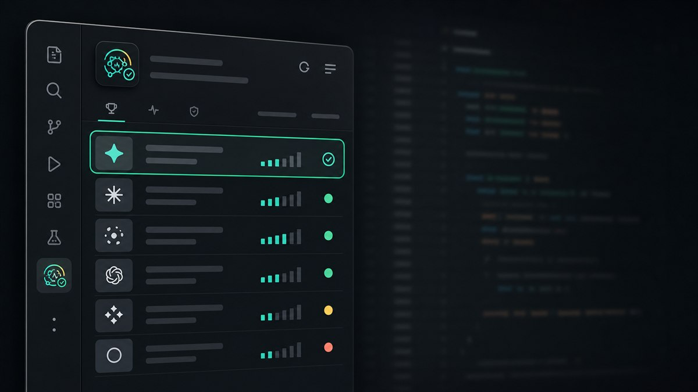
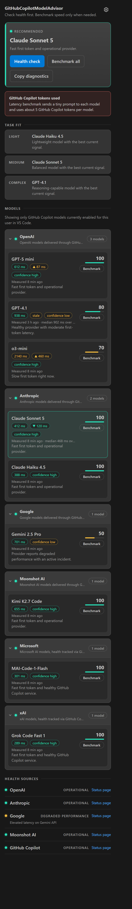

Know which GitHub Copilot model to use, before you waste a prompt on it.
A model can be enabled for your account but slow right now — or its provider can be mid-outage. Model Advisor ranks your GitHub Copilot models by health, latency, and task fit, inside VS Code.

What it does
A compact instrument, not another dashboard
Open the sidebar, run a check, know which model to use. That's the whole loop — recommendation first, details second.
Token-free health checks
The default check never sends a prompt to any model. It reads public status feeds from OpenAI, Anthropic, Google, and GitHub, then scores every GitHub Copilot model enabled for your account.
Explicit latency benchmarks
When speed matters, benchmark one model or all of them. It measures time to first token with a tiny prompt and always asks before spending anything.
One score, honest penalties
Every model starts at 100 and loses points for slow first tokens, degraded providers, and active incidents. Ties break by latency. Uncertainty is shown as data, never hidden.

Light · medium · complex picks
Separate suggestions for quick edits, everyday coding, and deep reasoning — built only from the models your account can actually use.
Status bar summary
A compact, clickable summary stays in the status bar while you work, with full diagnostics in the output channel when you want them.
How it works
Built on the official VS Code model API
Models are discovered with vscode.lm.selectChatModels({ vendor: "copilot" }), so the list always matches what your account, organization, and session actually allow.
Detect
Lists your enabled GitHub Copilot models, groups them by inferred provider, and collapses duplicate aliases.
Check health
Reads public status pages for each provider plus the GitHub Copilot service — no prompts, no tokens.
Benchmark (optional)
Measures time to first token and cancels the stream on the first chunk, so the cost per model is minimal.
Recommend
Combines latency, provider health, and incidents into a ranked list, with the best current option on top.
hi by default), and it always shows a confirmation with exactly which models will receive it.
Signals
Where the health data comes from
All sources are public status feeds — nothing private leaves your editor.
| Signal | Source |
|---|---|
| OpenAI | status.openai.com |
| Anthropic | status.claude.com |
| status.cloud.google.com | |
| GitHub Copilot service | githubstatus.com |
Get started
Up and running in under a minute
Install GitHub Copilot Chat, sign in to GitHub, then add Model Advisor. Open the sidebar icon and press Ctrl+Shift+M (Cmd+Shift+M on macOS) for an instant, token-free health check.